German Federal Agency for Technical Relief (THW)
- 88,000 volunteers (helpers)
- 668 local sections
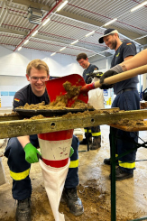
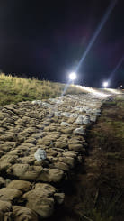
www.thw.de
Technical Platoon
~30 helpers
www.thw-osnabrueck.de
Command squad
Supports the platoon leader with:
- (Radio) communication
- Situation map
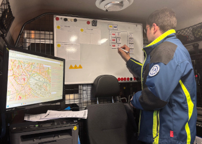
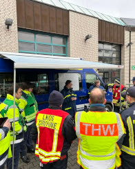
Outline
- Off-line and off-grid operation
- Access via a WiFi hotspot
- Full coverage of Germany
- Draw directly on the map
- Search places and streets using postcodes
- UTMREF coordinates supported
- Live demo
- Live updates via LORAWAN (work in progress)
Raspberry Pi Zero 2 W
- Low-cost and energy-efficient
- 64-bit quad-core CPU
- Can be powered by mobile power sources
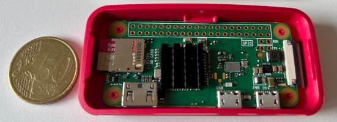
WiFi access point
Created using AccessPopup from www.raspberryconnect.com
- Connects to a known WiFi network if available
- Creates a WiFi hotspot if no network is available
OpenStreetMap data
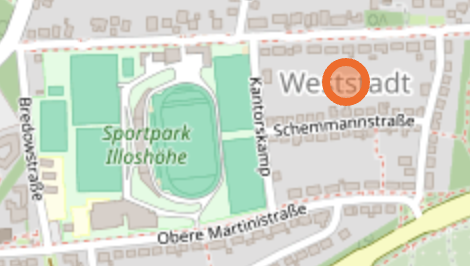
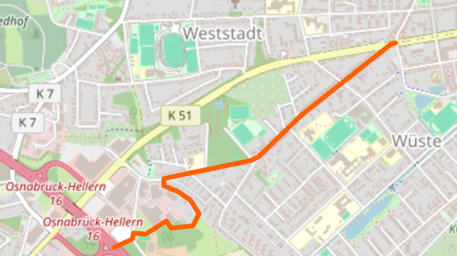
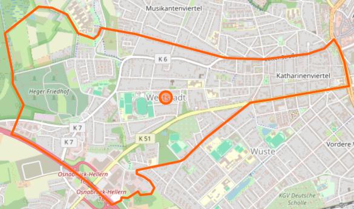
| Node |
| Tag |
Value |
| name |
Weststadt |
| place |
suburb |
| Way |
| Tag |
Value |
| admin_level |
10 |
| boundary |
administrative |
| Relation |
| Tag |
Value |
| name |
Weststadt |
| type |
boundary |
| admin_level |
10 |
| boundary |
administrative |
germany-latest.osm.pbf (4.2 GB)
MBTiles
The MBTiles format is based on SQLite
Planetiler generates germany.mbtiles (2.8 GB) from the raw OpenStreetMap data.
Data is provided via FastAPI (region='germany'):
GET /api/vector/tiles/{region}/{zoom_level}/{x}/{y}.pbf
Display the map
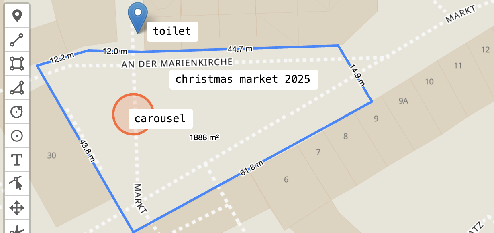
Map styles
Modified styles from OpenMapTiles to consider local paths of tiles, fonts and sprites.
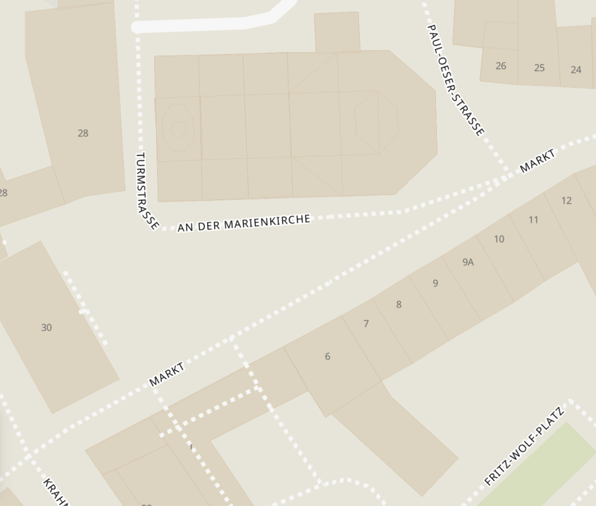
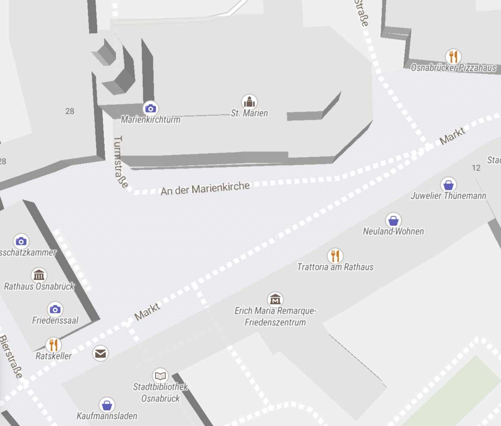
OSM Basic
OSM Liberty
Postcode regions
Simplified GeoJSON and CSV file downloaded from www.suche-postleitzahl.org
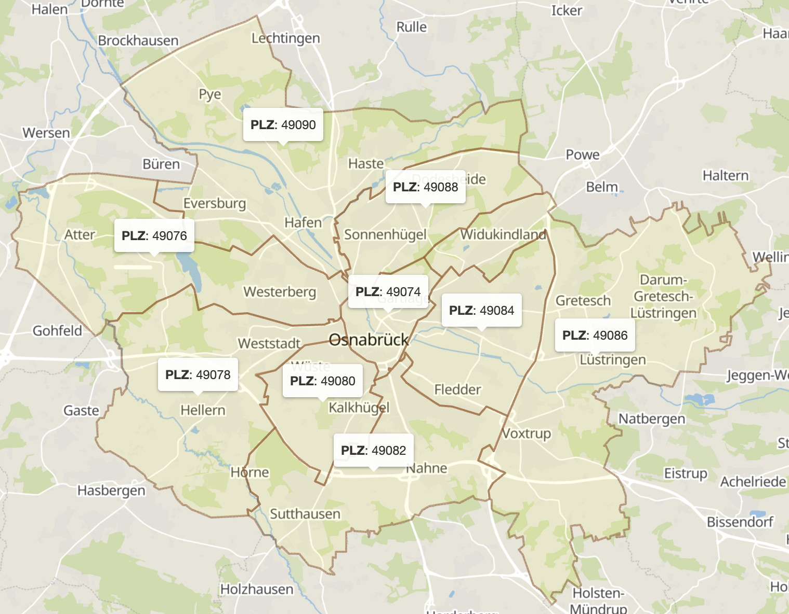
Postcode search
Created a PyO3 module in Rust to perform fast search operations on GeoJSON files
from point_in_geojson import PointInGeoJSON
with open("post_codes_germany.json") as f:
pig = PointInGeoJSON(f.read())
def get_plz_from_lat_lon(lat: float, lon: float) -> str | None:
result = pig.point_included_with_properties(lon, lat)
return result[0]["plz"] if len(result) == 1 else None
def get_features_for_plz(plz: str) -> list[dict]:
return pig.features_with_property_str(
"plz", plz, "starts_with")
https://github.com/jaluebbe/point_in_geojson
Extraction of places
Extract nodes from OSM PBF using PyOsmium
| Tag |
Value |
| name |
Weststadt |
| place |
suburb |
- name tag must exist
- place tag must be one of:
- city
- village
- suburb
- quarter
- neighbourhood
Data stored as SQLite for further processing
Extraction of streets
Extract ways with their nodes from OSM PBF
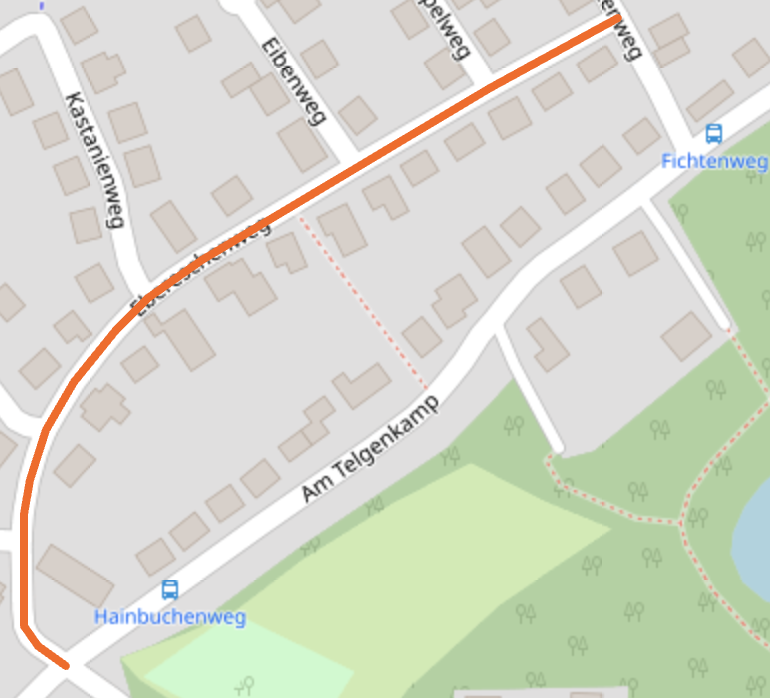
| Tag |
Value |
| name |
Ebereschenweg |
| highway |
residential |
- name tag must exist
- highway tag must be one of:
- primary
- tertiary
- residential
- pedestrian
- ...
Data stored as SQLite for further processing
Creation of the search database
Cluster places and streets by post codes and administrative regions for a more efficient search.
Most common search results in Germany:
| Type |
Name |
Occurrences |
| Place |
Altstadt |
79 |
| Street |
Hauptstraße |
6,435 |
Simplify streets to a single point.
Line string simplification
def simplify_locations(locations):
multipoint = MultiPoint(locations)
centroid = multipoint.centroid
return min(
locations,
key=lambda point: Point(point).distance(centroid)
)
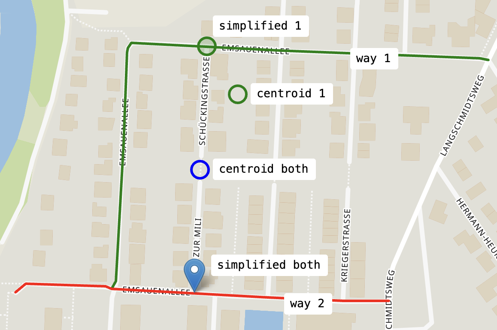
Using Shapely
each street is reduced from multiple lines to a single point on the street.
Military Grid Reference System (MGRS/UTMREF)
| Conversion |
| Lat., Lon. |
52.538484, 7.295975 |
| UTM |
32 N 384431 5822297 |
| MGRS/UTMREF |
32U LD 84431 22297 |
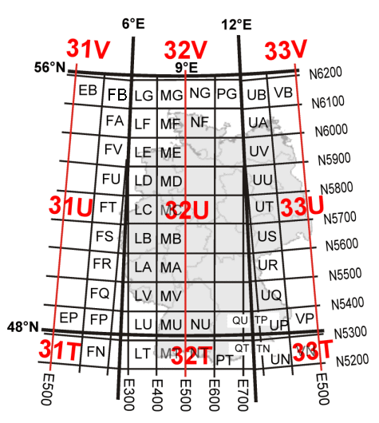
| Coordinate |
Precision |
| 32U LD |
100 km |
| 32U LD 8 2 |
10 km |
| 32U LD 84 22 |
1 km |
| 32U LD 844 222 |
100 m |
| 32U LD 8443 2229 |
10 m |
| 32U LD 84431 22297 |
1 m |
PyGeodesy for lat/lon conversion needs zero padding.
Live demo: WW2 bomb evacuation
Long Range Wide Area Network (LoRaWAN)
- Operates at 868 MHz in Europe
- Long range, low power, low data rate
- Encrypted transmissions
Battery powered sensor nodes

Temperature
LORAWAN gateway
-
Messages are forwarded to
The Things Stack Sandbox.
-
Messages are decrypted and decoded on the
Network Server, not on the gateway.
-
ChirpStack
as local Network Server is available on the device.
LORAWAN range test
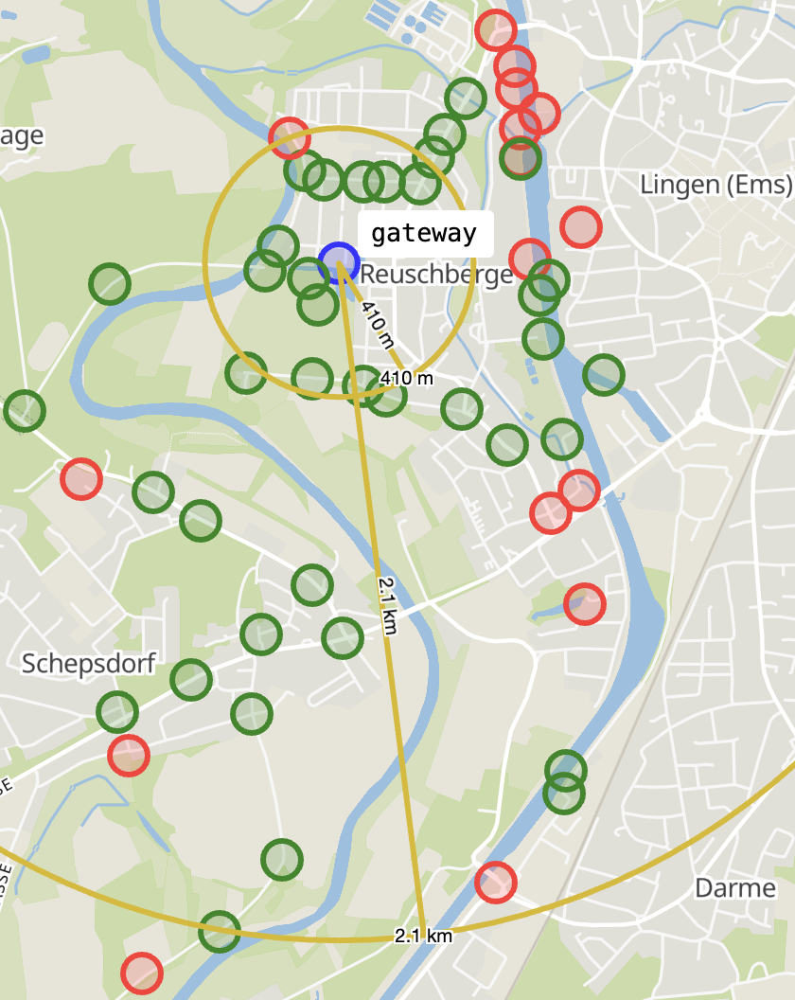